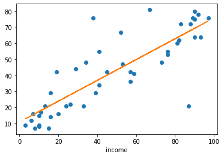

Use statsmodels (formula API) to estimate \(\text{income} = \alpha + \beta \times \text{education}\). Comment regression statistics.
#https://www.statsmodels.org/stable/generated/statsmodels.formula.api.ols.htmlfrom statsmodels.formula import api as smfmodel_1 = smf.ols("income ~ education", df)res_1 = model_1.fit()
<statsmodels.regression.linear_model.RegressionResultsWrapper at 0x7ffad5b135e0>
res_1.summary()
OLS Regression Results
Dep. Variable:
income
R-squared:
0.525
Model:
OLS
Adj. R-squared:
0.514
Method:
Least Squares
F-statistic:
47.51
Date:
Tue, 02 Feb 2021
Prob (F-statistic):
1.84e-08
Time:
11:29:50
Log-Likelihood:
-190.42
No. Observations:
45
AIC:
384.8
Df Residuals:
43
BIC:
388.5
Df Model:
1
Covariance Type:
nonrobust
coef
std err
t
P>|t|
[0.025
0.975]
Intercept
10.6035
5.198
2.040
0.048
0.120
21.087
education
0.5949
0.086
6.893
0.000
0.421
0.769
Omnibus:
9.841
Durbin-Watson:
1.736
Prob(Omnibus):
0.007
Jarque-Bera (JB):
10.609
Skew:
0.776
Prob(JB):
0.00497
Kurtosis:
4.802
Cond. No.
123.
Notes: [1] Standard Errors assume that the covariance matrix of the errors is correctly specified.
The estimated regresssion is income = 10.6 + 0.59 education. At a 5% p-value level both the intercept and the coefficient are significant. R-squared is 0.52: the model explains half of the variance.
Use statsmodels to estimate \(\text{income} = \alpha + \beta \times \text{prestige}\). Comment regression statistics.
Notes: [1] Standard Errors assume that the covariance matrix of the errors is correctly specified.
The estimated regresssion is income = 10.6 + 0.59 education. At a 0.5% p-value level both the intercept and the coefficient are significant. R-squared is 0.70: the model predicts income better than the former one.
Notes: [1] Standard Errors assume that the covariance matrix of the errors is correctly specified.
The \(R^2\) is only slightly higher than last model, but adjusted \(R^2\) is actually lower: the model has less predictive power.
The coefficient for education is not significant. It should be dropped from the regresssion.
This might happen, because education and prestige are correlated. Let’s check it:
df.corr()
income
education
prestige
income
1.000000
0.724512
0.837801
education
0.724512
1.000000
0.851916
prestige
0.837801
0.851916
1.000000
Education and prestige are correlated at 83%. It makes no sense keeping the two in the same regression.
WHich model would you recommend? For which purpose?
If the goal is to predict income, the one with prestige only, has the highest prediction power. If we are interested in the effect of education, we keep only education.
Plot the regression with prestige
a = res_2.params.Interceptb = res_2.params.prestige
x = df['prestige']
y = a + b*x
from matplotlib import pyplot as pltplt.plot(x, df['income'],'o')plt.plot(x, y)plt.xlabel("prestige")plt.xlabel("income")
Text(0.5, 0, 'income')

Check visually normality of residuals
pred = a + b*xactual = df['income']resid = actual - pred # same as res_2.resid
Import dataset from data.dta. Explore dataset (statistics, plots)
Our goal is to explain z by x and y. Run a regression.
Examine the residuals of the regression. What’s wrong? Remedy?
Taylor Rule
In 1993, John taylor, estimated, using US data the regression: \(i_t = i^{\star} + \alpha_{\pi} \pi_t + \alpha_{\pi} y_t\) where \(\pi_t\) is inflation and \(y_t\) the output gap (let’s say deviation from real gdp from the trend). He found that both coefficients were not significantly different from \(0.5\). Our goal, is to replicate the same analysis.
Import macro data from statsmodels (https://www.statsmodels.org/devel/datasets/generated/macrodata.html)
Create a database with all variables of interest including detrended gdp
Run the basic regression
Which control variables would you propose to add? Does it increase prediction power? How do you interpret that?